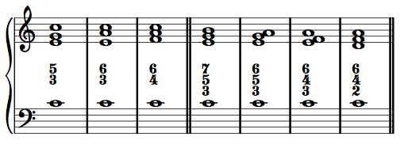
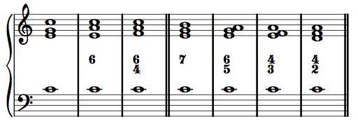
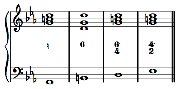

Introduction to thoroughbass
A thoroughbass (It. Basso continuo, Ger. Generalbaß, also called a figured bass) is a harmonic shorthand of a musical passage or work. It is composed of a bass line, and chord symbols—called figures. It is called a "thorough" bass or "continuous" bass line because it includes the lowest sounding note at any given moment, regardless of the instrument or voice sounding the note. It usually corresponds to a single instrument or vocal part, but not always.
The historical origin of the thoroughbass part was in church settings where a piece for 6–8 singers was to be performed by one or two voices with a keyboard instrument. The keyboardist, rather than play the 4–7 remaining parts, would transcribe the lowest note and shorthand figures to remind himself of the (simple) intervals present above that lowest voice. This would allow the keyboardist to play one or two of the more important lines, and fill the rest of the texture with blocked or arpeggiated chords. (Think seventeenth-century lead sheet.) A good keyboardist, who knew his harmony and voice-leading, could simply follow the bass line without figures (an unfigured bass) and listen to the melody, improvising the rest. Less experienced keyboardists, however, could manage otherwise complicated pieces by reading a bass line and memorizing a small number of figures and basic voice-leading rules.
We will use thoroughbass lines for a number of purposes in this class:
- Harmonic "reductions" of pieces and passages with dense textures or complicated voice-leading
- Shorthand representations of stock harmonic patterns
- The harmonic basis for model composition exercises (akin to the cantus firmus of species counterpoint)
Thoroughbass is a simple, and foundational, concept. Master it early, and subsequent activities will be much easier.
Note on figure placement: Thoroughbass figures can appear above or below the bass line. Both are common, but for this class, we will always place them above the bass line. This connects them to our habits of interval analysis during species counterpoint, keeps figures separate from other harmonic symbols we will place below the bass line, and make typesetting in notation software easier when both figures and other symbols are in play simultaneously.
Figures
In general, a thoroughbass figure indicates the simple intervals above the bass for all pitch classes present in the chord.
Note that the largest number typically found in thoroughbass figures is 7. In general, compound intervals (an octave or larger) are reduced to their simple interval equivalent. A tenth becomes a third, a thirteenth becomes a sixth, etc.
The most common chords in tonal music are triads and seventh chords. The following figures apply to these chords:

- 5/3: use a fifth and a third above the bass (one note of the chord will be doubled)
- 6/3: use a sixth and a third above the bass (one note of the chord will be doubled)
- 6/4: use a sixth and a fourth above the bass (one note of the chord will be doubled)
- 7/5/3: use a seventh, a fifth, and a third above the bass
- 6/5/3: use a sixth, a fifth, and a third above the bass
- 6/4/3: use a sixth, a fourth, and a third above the bass
- 6/4/2: a use a sixth, a fourth, and a second above the bass
These figures are so common, that most of them have shortcuts:

- no figure = 5/3
- 6 = 6/3
- 6/4 is never abbreviated
- 7 = 7/5/3
- 6/5 = 6/5/3
- 4/3 = 6/4/3
- 4/2 (or just 2) = 6/4/2
Other shortcuts generally follow two simple rules:
- Assume a fifth is present above the bass unless there is a "6" in the figure.
- Assume a third is present above the bass unless there is a "4" or a "2" in the figure.
Unfamiliar figures and chords
Only seven figures are given above. If you see a figure you do not recognize, simply follow the intervals. Likewise, if analyzing a chord that is not a triad or seventh chord, simply label the simple intervals you see/hear above the bass, from top to bottom in descending order: 7/6/3 or 5/4, for example. In time, you will become familiar with a number of other harmonic possibilities, and their corresponding figures.
Chords of the fifth and chords of the sixth
All chords can be categorized as either a chord of the fifth or a chord of the sixth. This distinction will be important for our study of voice-leading.
A chord of the fifth contains a fifth above the bass, but no sixth above the bass.
A chord of the sixth contains a sixth above the bass.
Chromatic alteration
If a note is chromatically altered (different than the key signature), the figure must be altered as well. Since bass notes are already present in the bass, a chromatic alteration in the bass will not make it into the figure. However, any other alteration in the upper voices (such as a raised leading tone in minor) must be reflected in the figure. To do so, simply put a sharp, flat, or natural to the left of the appropriate number.
Of course, there are some shortcuts. For example, draw a line (a "slash") through a number to denote that it is raised by half-step (can substitute both for sharp or for natural). Also, when altering the third above the bass, simply use the sharp, flat, or natural and leave out the "3."

In general, if there is a shortcut available, use it. The shortcuts are more standard than the corresponding full notation.
Keep in mind that some chords have abbreviated figures. For example, it is common for the leading tone to be the third above the bass in a 5/3 chord. In such a situation, a bass note that otherwise would have no figure needs a sharp or a natural for its thoroughbass figure.